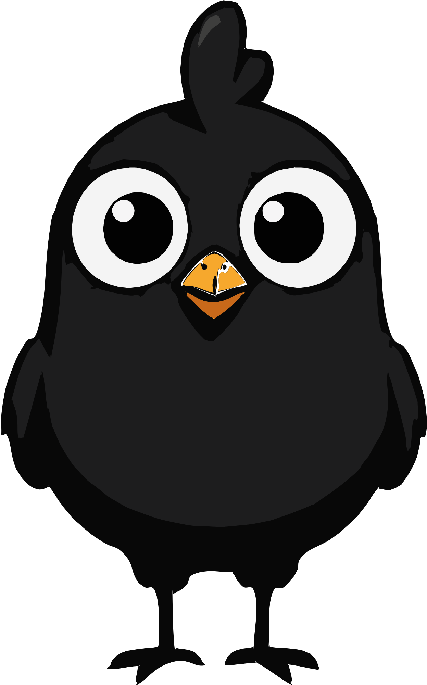
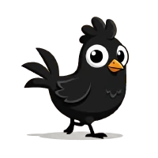
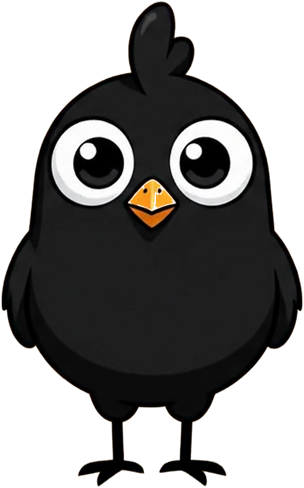
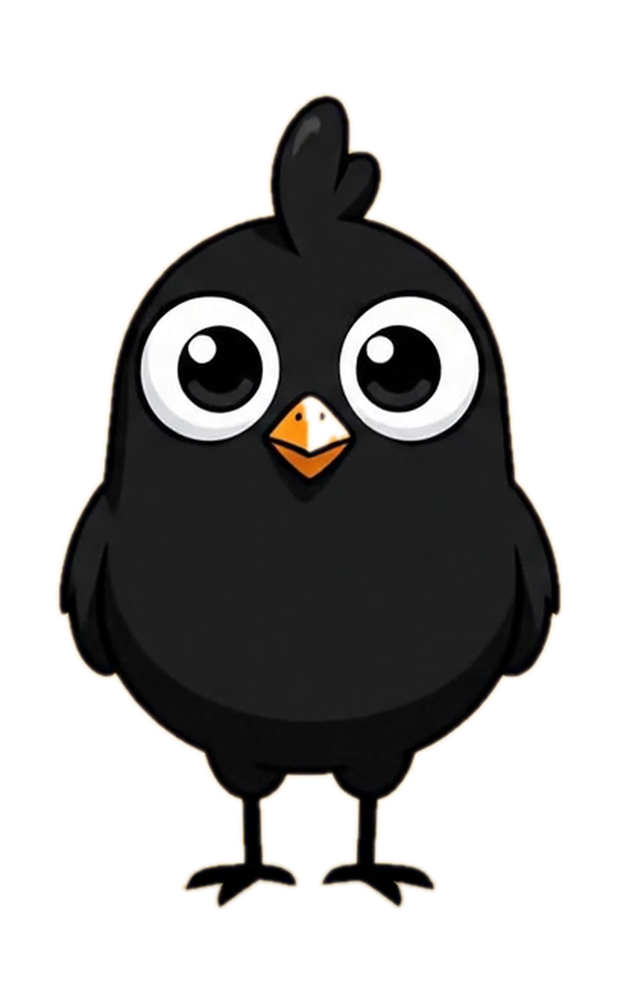
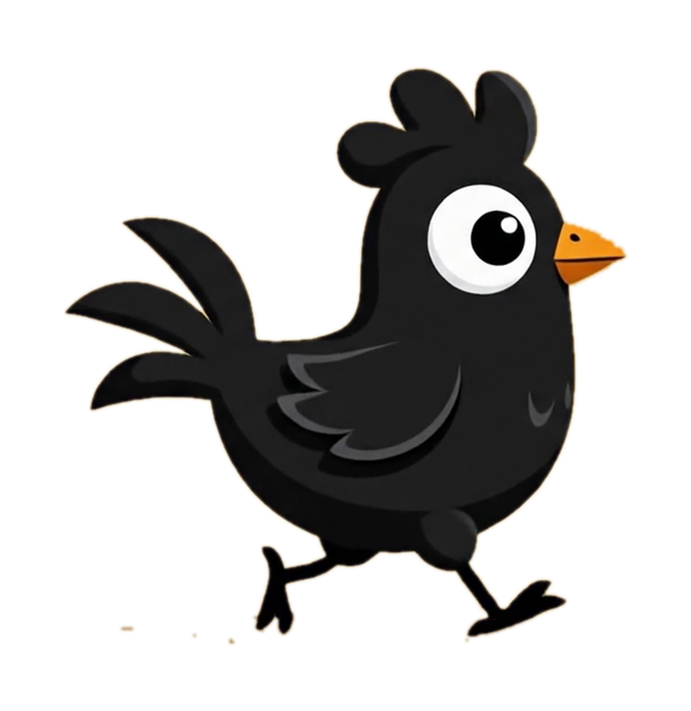

Klo — el gallo, entrega técnica (diseño original intocado)
Todo sobre tablero de ajedrez: si ves los cuadros alrededor del gallo, el fondo es
100% transparente. Los archivos viven en design-propuestas/assets/logo/ y las tiras de
la app en public/marca/.
gallo-frontal.svg — vectorizado (14 trazos). Escala infinita: lonas, tarjetas, lo que sea. 23 KB.

gallo-frontal-vector-2000.png — PNG transparente 1247×2000 px (alta calidad, para impresión digital y redes).
gallo-camina.apng.png — la caminata en PNG animado SIN fondo (loop, 12 cuadros). Sirve donde un webp no entra: presentaciones, chats, web.

gallo-voltea.apng.png — el giro a frente en PNG animado SIN fondo (26 cuadros, corre una vez; recarga la página para verlo de nuevo).
public/marca/gallo-camina.webp — la tira de sprites que usa la pantalla de carga (12 cuadros, alfa verificado al píxel).

gallo-frontal.png — 1008×1613 px transparente (el render original del vector).

gallo-frontal-blanco.png — toma frontal del mp4 original sobre BLANCO puro, 814×1316 px (recorte por color, pico y ojos intactos).

gallo-lateral-blanco.png — la caminata de perfil sobre BLANCO puro, 1228×1262 px.
gallo-animacion-original.apng.png — los 10 segundos completos del video en PNG animado SIN pérdida, 1280×720 a 24 cuadros (84 MB: es el máster; para web usa los ligeros de arriba).
Del lado de la app: la pantalla de carga quedó siempre en
blanco galería (el gallo negro jamás desaparece en tema oscuro) y sin las veladuras que causaban
el marco fantasma en el teléfono.